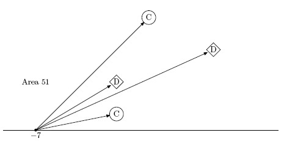

Home Page
F.A.Qs
Statistical Charts
Past Contests
Scheduled Contests
Award Contest
| Online Judge | Problem Set | Authors | Online Contests | User | ||||||
|---|---|---|---|---|---|---|---|---|---|---|
| Web Board Home Page F.A.Qs Statistical Charts | Current Contest Past Contests Scheduled Contests Award Contest | |||||||||
|
Language: Area 51
Description Michael and Nick are living near the famous top-secret "Area 51" facility. The facility is enclosed by a fence and is so large that for the purpose of this problem we consider the fence being a line that stretches infinitely into both directions.
Only extremely brave boys are not scared to go to the fence and peek at the facility. Nick is among the brave ones. He once came to the fence and saw a number of chimneys with distinct shapes. As a proof of his bravery he tells everybody what chimneys he saw from his left to his right. Michael's father is working at "Area 51" and has a facility's map at his home. Michael found this map and he can now verify Nick's claim of being near the facility's fence. However, it turns out to be complicated, and your task is to write a program to perform this verification. On a map distinctly shaped chimneys are denoted by capital letters from A to Z. Each letter denotes a distinct shape, but chimneys with this shape can appear more than once on a map. The map uses Cartesian coordinate system oriented so that the fence is Ox axis and all chimneys are located on a half-plane with a positive y coordinate. All chimneys are considered to be points (their sizes and actual geometrical shapes are ignored for the purpose of this problem). Nick claims that he looked from a point on the fence where no two chimneys were on the same line of his sight (a line that originates from his point of view). It means that at the point he looked from, all the chimneys he saw had a well-defined order from left to right. Michael have already made a preliminary verification of Nick's claim. He made sure that the number of distinctly shaped chimneys matches their number on the map. Now Michael needs to perform a final verification - to get a list of x coordinates on a fence (if any) where the corresponding arrangement of chimneys could be seen from. This information shall be presented as an ordered list of open intervals (a1, b1), (a2, b2), ..., (an, bn), so that a1 < b1 <= a2 < b2 <= ... <= an < bn. Asterisk symbol ("*") is used in place of a1 and/or bn to denote interval that extends to infinity on the left or on the right correspondingly. Note, that bi = ai+1 = x in case where Nick could not have been at the point x on a fence, because he would have seen more than one chimney on a single line of his sight, but being to the left or to the right of x yields the order of chimneys that he saw. Input The first line of the input contains an integer number m - the number of chimneys at the "Area 51" facility (1 <= m <= 100). The second line of the input file contains a string of m letters from A to Z that describe the chimneys that Nick saw from his left to his right. A single letter can be used more than once (if Nick saw the same shape more than once). Then follow m lines that describe chimneys on the map. Each line contains three tokens separated by spaces - chimney shape letter (from A to Z), and two integers xi and yi - chimney coordinates (-100 <= xi <= 100, 0 <= yi <= 100). On these m lines letters appear in arbitrary order, but each letter from A to Z appears the same number of times as on the second line of the input. No two chimneys have the same coordinates. Output Write to the first line of the output a single integer number n - the number of intervals that describe x coordinates on a fence where Nick could have seen the corresponding arrangement of chimneys from. Write to the second line of the output file 2n numbers a1, b1, ... , an, bn using "*" instead of a number a1 and/or bn to denote infinity. Numbers must be precise up to 10-6. Sample Input 4 CDDC C 0 7 D 4 5 C -2 1 D -2 3 Sample Output 3 * -11 -11 -3.5 14 * Hint Sample input 2
4 DCCD C 0 7 D 4 5 C -2 1 D -2 3 Sample output 2 2 -3.5 -2.333333 -2.333333 -2 Sample input 3 4 DCDC C 0 7 D 4 5 C -2 1 D -2 3 Sample output 3 0 The picture below shows that if the boy looks from the point x = -7 he sees the chimneys in the following order: C, D, D, C. It is so for any point from the set (-∞,-11) ∪ (-11,-3.5) ∪ (14,+∞) - the first example from the problem statement.  Source |
[Submit] [Go Back] [Status] [Discuss]
All Rights Reserved 2003-2013 Ying Fuchen,Xu Pengcheng,Xie Di
Any problem, Please Contact Administrator